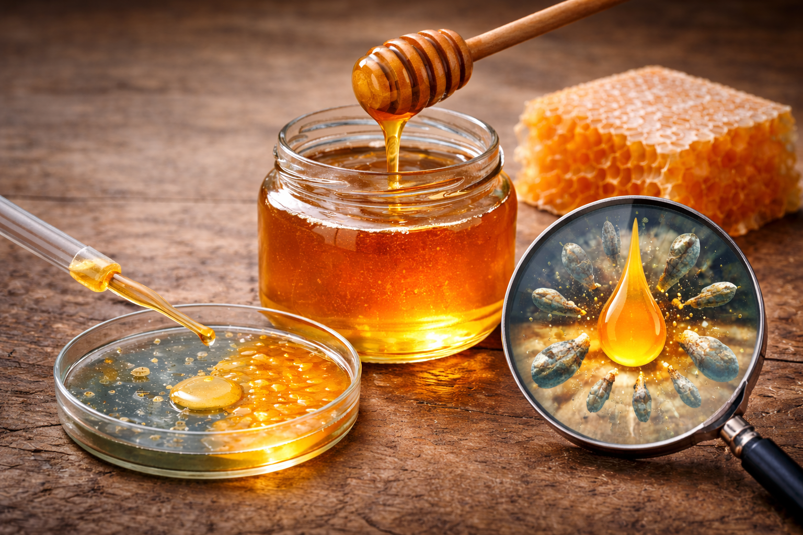

Štátny veterinárny a potravinový ústav
Štátny veterinárny a potravinový ústav (ŠVPÚ) je štátnou príspevkovou organizáciou zriadenou Ministerstvom pôdohospodárstva a rozvoja vidieka SR. Zabezpečuje laboratórnu diagnostiku chorôb zvierat, kontrolu a skúšanie potravín, krmív a vody na celom území Slovenska. Všetky pracoviská sú akreditované podľa normy ISO/IEC 17025.
ℹ️
Vzorky prijímame na všetkých pracoviskách (otváracie hodiny nájdete na stránkach jednotlivých pracovísk). E-žiadanku môžete podať online kedykoľvek na eziadanky.svpu.sk.
Naše pracoviská
Veterinárny a potravinový ústav v BratislaveBotanická 15
Veterinárny a potravinový ústav v Dolnom KubíneJánoškova 1611/58
Veterinárny a potravinový ústav v KošiciachHlinkova 1/C
Veterinárny ústav vo ZvoleneAkademická 3
Aktuality zo ŠVPÚ

15. 3. 2026
Antimikrobiálna aktivita medu
Slovensko je prvá krajina EÚ, ktorá ponúka akreditovanú metódu stanovenia antibakteriálnej aktivity medu.
Prečítať celý článok →
25. 2. 2026
Informácie o giardióze
V posledných týždňoch sa v médiách objavili informácie o zvýšenom výskyte giardiózy.
Prečítať celý článok →3. 3. 2025
Nová zvozná linka – Zvolen sever
Od marca 2025 prevádzkujeme novú zvoznú linku pokrývajúcu severnú časť Zvolena a okolie.
Prečítať celý článok →